Chapter 2 Solutions to problems in Chapter 2
Problem 2.1
Find the Weibull distribution in R’s help system. Simulate \(n=10000\) draws from the Weibull distribution with shape parameter \(2\) and scale parameter \(3\). Draw a histogram of your simulations.
Suppose that the vector
xcontains \(n=10000\) simulations from the standard normal \(\mu=0, \sigma=1)\). Without simulating any new random numbers, transform it into the vectorysuch thatyis a vector of \(n=10000\) simulations from the normal with \(\mu=1\) and \(\sigma=0.5\). Draw histograms of bothxandyon the same plot. (Note: the extra parameteraddis used to superimpose plots. You may want to use different colors, too. Use the e parametercolfor that. )Starting with
x=seq(-3,3,by=0.1), define the appropriate vectoryand usexandyto plot the graph of the cdf of the standard normal. The command you want to use isplotwith the following extra argumentstype="l"(to get a smooth line instead of a bunch of points).main="The CDF of the standard normal"(to set the title), and- another argument (which you must look up youself) that will set the \(y\)-axis label to \(F(x)\).
Solution.
x = rweibull(10000, shape = 2, scale = 3)
hist(x)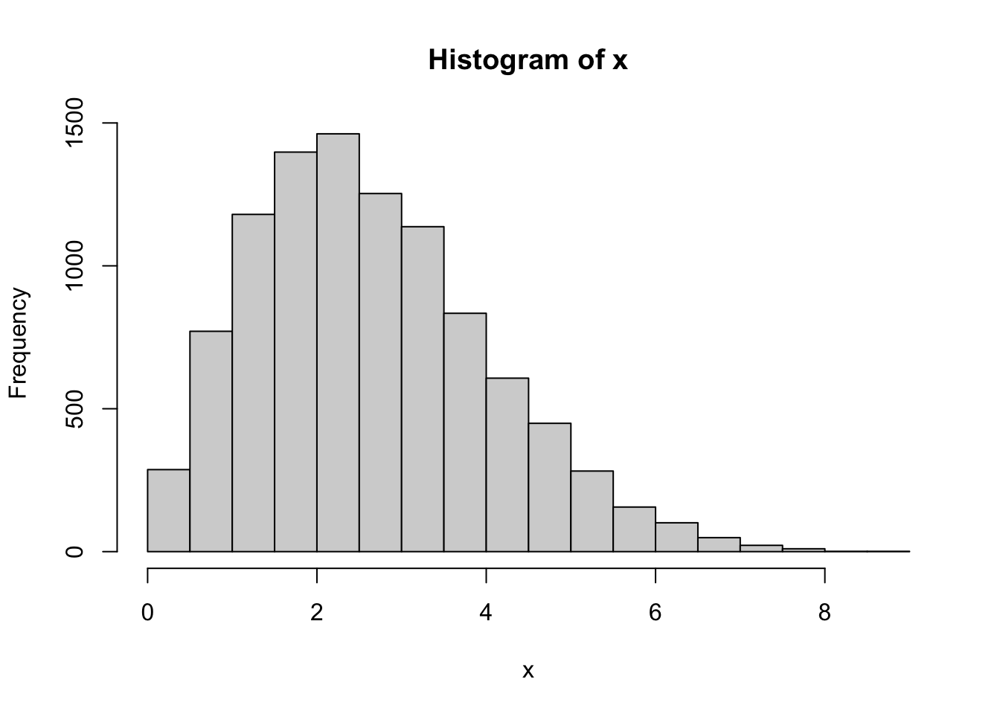 2. Let \(X\) be a normally distributed random variable, with parameters \(\mu_X\) and \(\sigma_X\). When we apply a linear transformation \(Y = \alpha X + \beta\) to X, the result \(Y\) has a normal distribution again, but with different parameters. These parameters, call them \(\mu_Y\) and \(\sigma_Y\), are easily identified by taking the expected value and the variance:
\[\begin{align} \mu_Y & = {\mathbb{E}}[Y] = \alpha {\mathbb{E}}[X] + \beta = \alpha \mu_X + \beta \\ \sigma_Y^2 & = \operatorname{Var}[Y] = \operatorname{Var}[\alpha X + \beta] = \alpha^2 \operatorname{Var}[X] = \alpha^2 \sigma_X^2 \end{align}\]
In the problem we are given \(\mu_X=0\) and \(\sigma_X=1\), so we must take \(\alpha = 0.5\) and \(\beta=1\) to get \(\mu_Y=1\) and \(\sigma_Y=0.5\) (note that this is exactly the opposite of taking \(z\)-scores, where we transform a general normal into the standard normal). In R
x = rnorm(10000)
y = 0.5 * x + 1
(mean(y))
## [1] 0.9967303
(sd(y))
## [1] 0.4992758Problem 2.2
Simulate \(n=1000\) draws from the distribution whose distribution table is given by
2
4
8
16
0.2
0.3
0.1
0.4
and plot their histogram.
You may have learned in probability how to compute the pdf \(f_Y(y)\) of a transformation \(Y=g(X)\) of a random variable with pdf \(f_X(x)\). Suppose that you forgot how to do that, but have access to \(10,000\) simulations from the distribution of \(X\). How would you get an approximate idea about the shape of the function \(f_Y\)?
More concretely, take \(X\) to be exponentially distributed with parameter \(1\) and \(g(x) = \sin(x)\) and produce a picture that approximates the pdf \(f_Y\) of \(Y\). (Note: even if you remember how to do this analytically, you will run into a difficulty. The function \(\sin(x)\) is not one-to-one and the method usually taught in probability classes will not apply. If you learned how to do it in the many-to-one case of \(g(x)= \sin(x)\), kudos to your instructor!)Let \(X\) be a random variable with the Cauchy distribution, and \(Y = \operatorname{arctan}(X)\). R allows you to simulate from the Cauchy distribution, even if you do not know what it is. How would you use that to make an educated guess as to what the distribution of \(Y\) is? To make your life easier, consider \(\tfrac{2}{\pi} Y\) first.
Solution.
x = sample(x = c(2, 4, 8, 16), size = 10000, prob = c(0.2, 0.3, 0.1, 0.4), replace = TRUE)
hist(x)| 2 | 4 | 8 | 16 |
|---|---|---|---|
| 1934 | 3035 | 1036 | 3995 |
- We apply the function \(\sin\) to the simulations. The histogram of the obtained values is going to be a good (graphical) approximation to the pdf of the transformed random variable:
x = rexp(1e+05)
y = sin(x)
hist(y)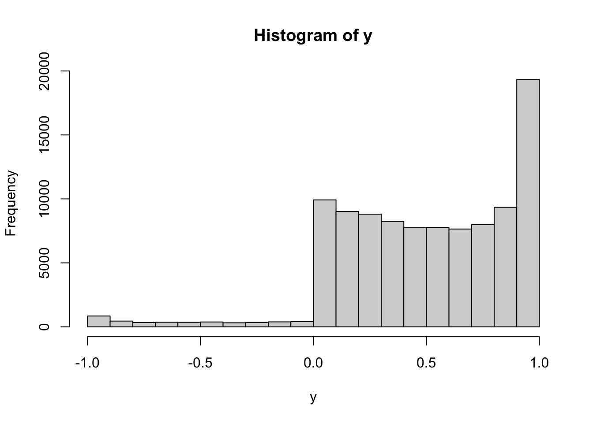
Having learned that histograms look like the pdfs of the underlying distributions, we draw the histogram:
x = rcauchy(10000)
y = atan(x) * 2/pi
hist(y)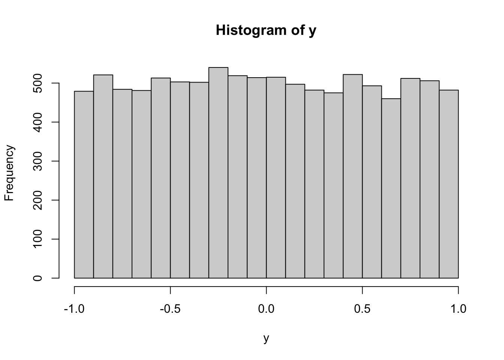 It looks uniform (if we replace \(10,000\) by \(100,000\) it will look even more uniform). We conclude that \(2/\pi \arctan(X)\) is probably uniformly distributed on \((-1,1)\). Hence, \(Y = \arctan(X)\) is probably uniformly distributed on \((-\pi/2, \pi/2)\).
Problem 2.3 A basic method for obtaining simulations draws from distributions other than the
uniform is the transformation method. The idea is to start with (pseudo)
random numbers, i.e., draws from the uniform \(U(0,1)\) distribution, and then
apply a function \(g\) to each simulation. The difficulty is, of course, how to
choose the right function \(g\).
Let \(X\) be a random variable with a continuous and strictly increasing cdf \(F\).
What is the distribution of \(Y=F(X)\)? What does that have to do with the transformation method?
Solution.
Let us perform an experimenti where \(X \sim N(0,1)\). Remembering that the cdf is given by the R function pnorm:
x = rnorm(1e+05)
y = pnorm(x)
hist(y)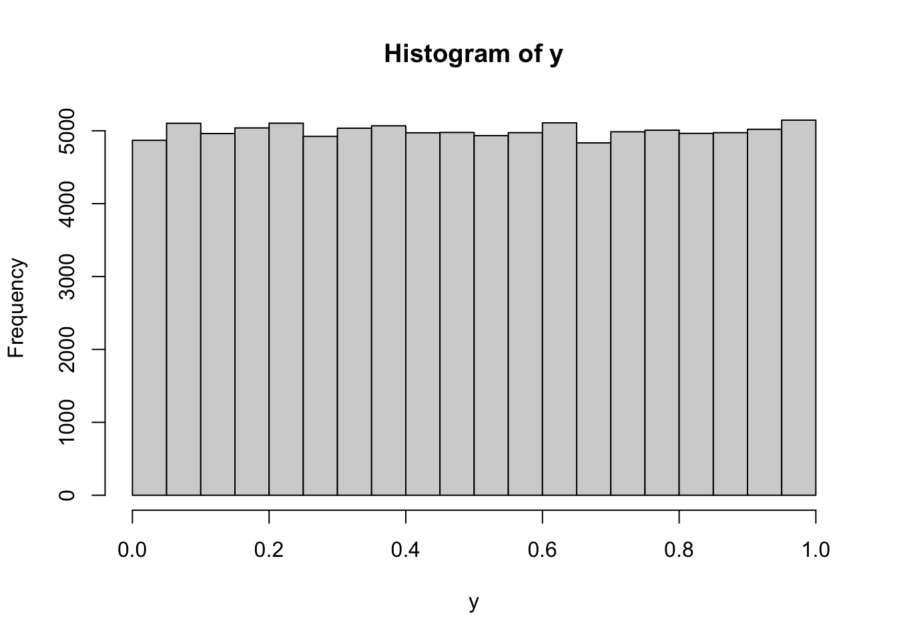 This looks like a histogram of a uniform distribution on \((0,1)\). Let’s try with some other continuous distributions
x1 = rexp(1e+05)
x2 = rcauchy(1e+05)
x3 = runif(1e+05)
x4 = rgamma(1e+05, shape = 3)
par(mfrow = c(2, 2))
hist(pexp(x1))
hist(pcauchy(x2))
hist(punif(x3))
hist(pgamma(x4, shape = 3))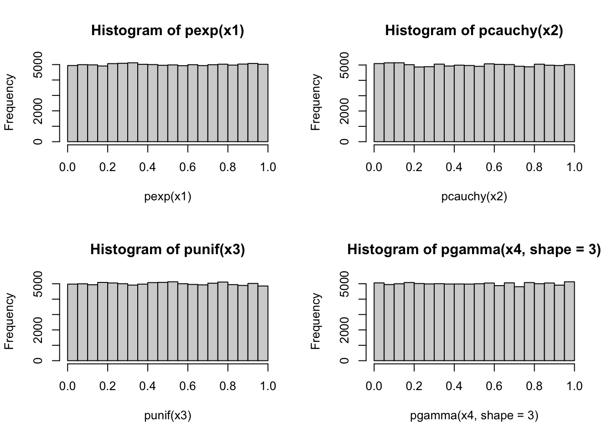 All of those point to the same conjecture, \(F(X)\) is uniformly distributed on \((0,1)\). To prove that, we take \(Y=F(X)\) and try to compute that cdf \(F_Y\) of \(Y\): \[ F_Y(y) = {\mathbb{P}}[ Y \leq y] = {\mathbb{P}}[ F(X) \leq y]\] Since \(F\) is strictly increasing, it admits an inverse \(F^{-1}\). Moreover, for any \(y \in (0,1)\), the set of all values of \(x\) such that \(F(x)\leq y\) (the red range) is exactly the interval \((-\infty, F^{-1}(y)]\) (the blue range), as in the picture below:

Hence, \[F_Y(y)={\mathbb{P}}[Y\leq y] = {\mathbb{P}}[ F(X) \leq y] = {\mathbb{P}}[ X \leq F^{-1}(y) ] = F(F^{-1}(y)) = y, \text{ for } y\in (0,1).\] The cdf \(F_Y\) is, therefore, equal to the cdf of a uniform on \((0,1)\). Since the cdf uniquely determines the distribution, \(Y\) must be uniformly distributed on \((0,1)\).
Problem 2.4 (Extra credit)
Let \(f_1\) and \(f_2\) be two pdfs. We take a constant \(\alpha \in (0,1)\) and define the function \(f\) by \[ f(x) = \alpha f_1(x) + (1-\alpha) f_2(x).\] The function \(f\) is the pdf of a third distribution, which is called the mixture of \(f_1\) and \(f_2\) with weights \(\alpha\) and \(1-\alpha\). Assuming that you know how to simulate from the distributions with pdfs \(f_1\) and \(f_2\), how would you draw \(10,000\) simulations from the mixture \(f\)? Show your method on the example of a mixture of \(N(0,1)\) and \(N(4,1)\) with \(\alpha=2/3\). Plot the histogram of the obtained sample (play with the parameter
breaksuntil you get a nice picture.)(Hint: start with two vectors, the first containing \(10,000\) simulations from \(f_1\) and the second from \(f_2\). Then “toss” \(10,000\) biased coins with \(\mathbb{P}[ H ] = \alpha\) … )
The double exponential or Laplace distribution is a continuous probability distribution whose pdf is given by \[ \tfrac{1}{2} \exp(-|x|), x\in {\mathbb R}.\] This distribution is not built into R. How would you produce simulations from the double exponential using R?
Solution.
- The idea is that before each draw a biased coin (with \({\mathbb{P}}[H]=\alpha\)) is tossed. If \(H\) is obtained, we draw from the distribution with pdf \(f_1\). Otherwise, we draw from the distribution with pdf \(f_2\). We write a function which performs one such simulation, and then use the command
replicateto call it several times and store the results in the vector:
single_draw = function() {
coin = sample(c(1, 2), prob = c(2/3, 1/3), size = 1, replace = TRUE)
if (coin == 1)
return(rnorm(1)) else return(rnorm(1, mean = 4, sd = 1))
}
nsim = 10000
y = replicate(nsim, single_draw())
hist(y)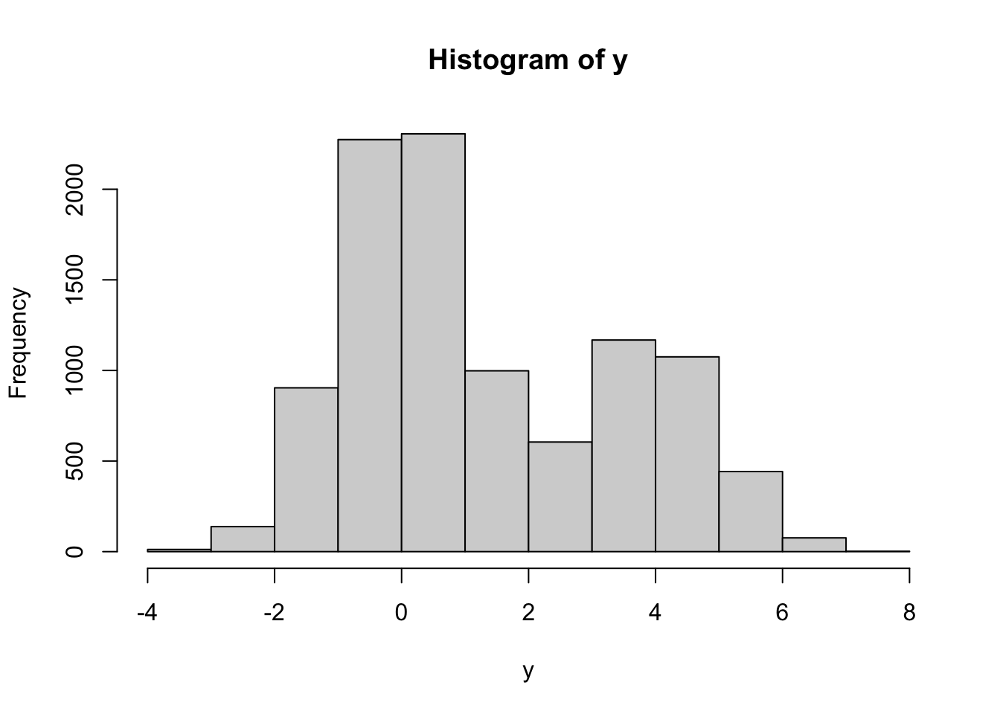 As you can see, the histogram has two “humps”, one centered around \(0\) and the other centered around \(4\). The first one is taller, which reflects the higher weight (\(\alpha=2/3\)) that \(N(0,1)\) has in this mixture.
If you wanted to write a more succinct vectorized code (which is not necessarily faster in this case), you could also do something like this
nsim = 10000
alpha = 2/3
x1 = rnorm(nsim)
x2 = rnorm(nsim, mean = 4, sd = 1)
coin = sample(c(TRUE, FALSE), size = nsim, prob = c(alpha, 1 - alpha), replace = TRUE)
y = ifelse(coin, x1, x2)The function ifelse is a vectorized version of the if-then blok and takes three arguments of equal length. The first one is a vector of logical values c, and the other two, x1, x2 only need to be of the same type. The result of is a vector whose value at the position i is x1[i] if c[i]==TRUE and x2[i] otherwise.
- The Laplace distribution can be understood as a mixture, with \(\alpha=1/2\) of two distributions. The first one is an exponential, and the second one is the exponential, but with the negative sign. Using our strategy from part 1. above, we could get simulations of it as follows:
nsim = 1e+05
alpha = 1/2
x1 = rexp(nsim)
x2 = -rexp(nsim) # note the minus in front of rexp
coin = sample(c(TRUE, FALSE), size = nsim, prob = c(alpha, 1 - alpha), replace = TRUE)
y = ifelse(coin, x1, x2)
hist(y)
You can do this more efficiently if you realize that every time we toss a coin and choose between x1 and x2, we are really choosing the sign in front of an exponentially distributed random variable. In other words, we can use coin as
a vector of random signs for a vector or draws from the exponential distribution:
nsim = 10000
alpha = 1/2
x = rexp(nsim)
coin = sample(c(-1, 1), size = nsim, prob = c(alpha, 1 - alpha), replace = TRUE)
y = coin * x
hist(y)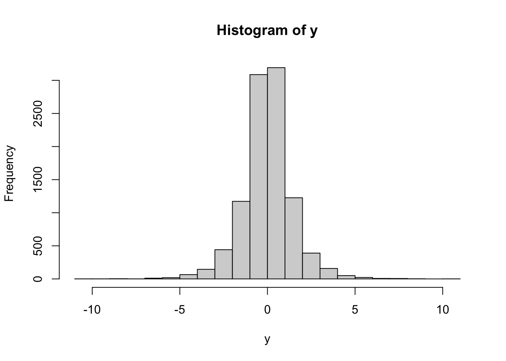
Problem 2.5 Let x=rnorm(1000) and y=rnorm(1000). For each of the following pairs, use the permutation test to decide whether they are independent or not
x^2+y^2andy^2(x+y)/sqrt(2)and(x-y)/sqrt(2)xand1x^2+y^2andatan(y/x).
What your conclusions in b. and d. suggest about the geometric properties of the distribution of \((X,Y)\) where \(X\) and \(Y\) are independent with standard normal distributions?
(Note: do not worry about dividing by \(0\) in d. It will happen with probability \(0\).)Solution. Let us write a function to save some keystrokes
permutation_test = function(z, w) {
par(mfrow = c(2, 2))
plot(z, w, asp = 1)
plot(z, sample(w), asp = 1)
plot(z, sample(w), asp = 1)
plot(z, sample(w), asp = 1)
}
x = rnorm(1000)
y = rnorm(1000)permutation_test(x^2 + y^2, y^2)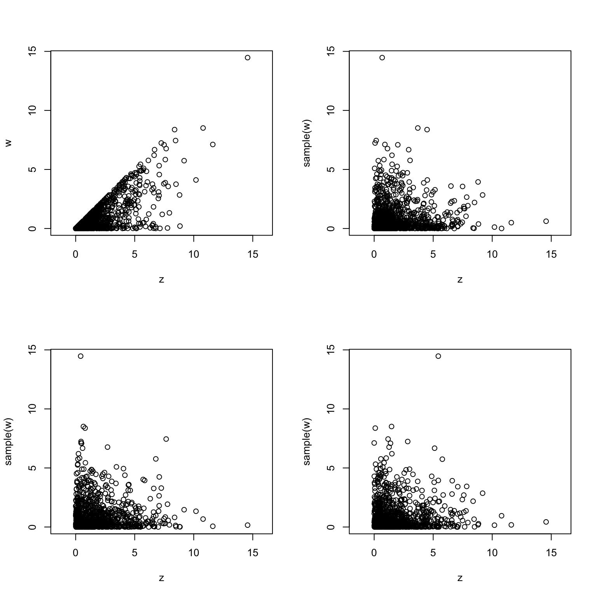 The first plot is very different from the other three. Therefore,the vectors are probably not independent.
permutation_test((x + y)/sqrt(2), (x - y)/sqrt(2))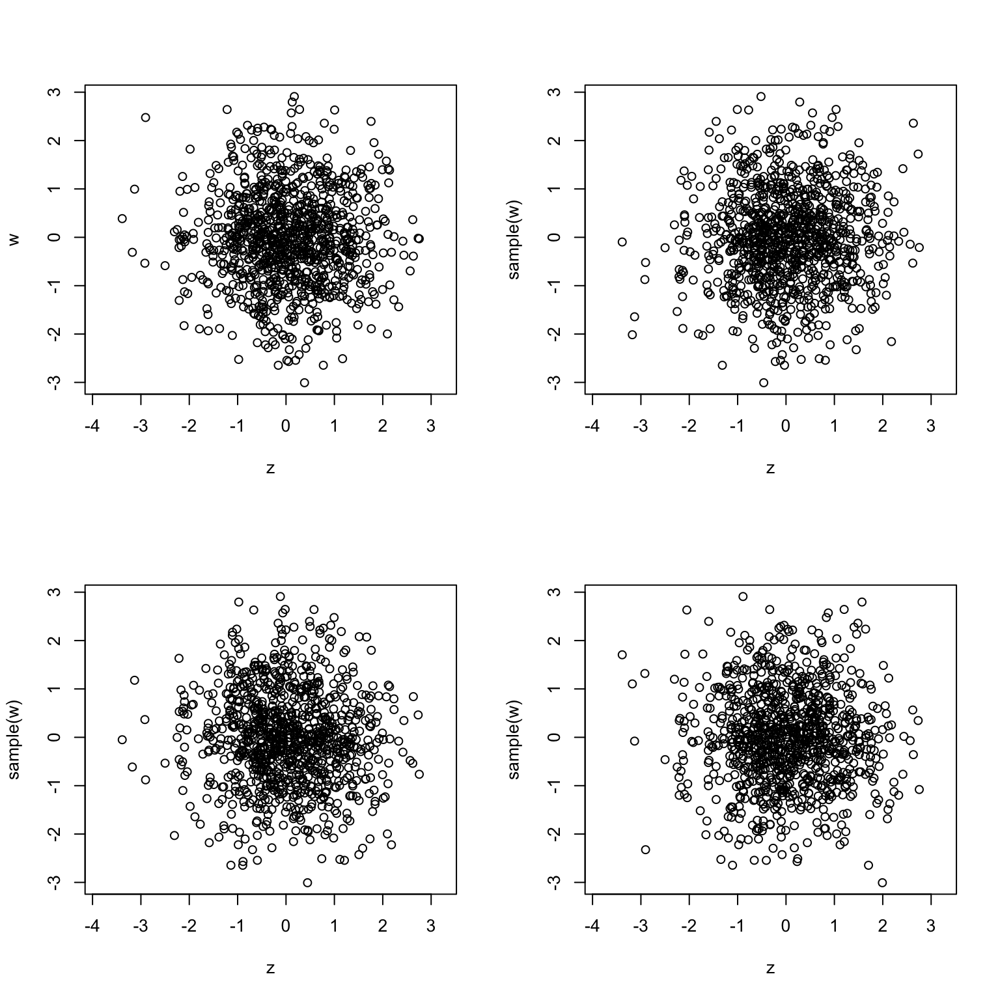 The first plot could easily be confused for one of the other three. Therefore the vectors are probably independent.
# we have to use rep(1,length(x)) to get a vector of 1s of the same length as x
permutation_test(x, rep(1, length(x)))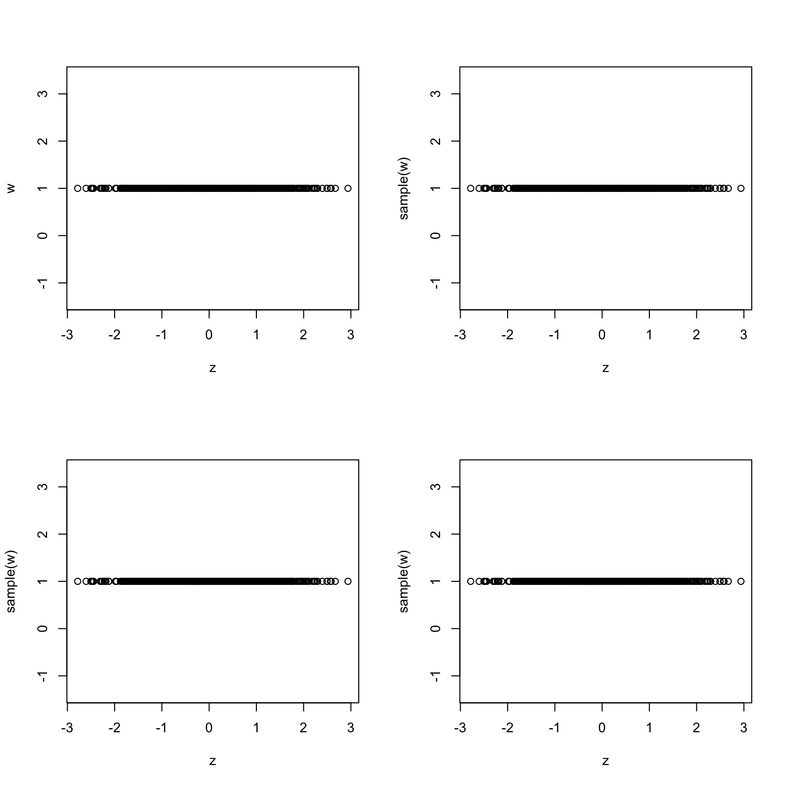 The plots look very similar. Therefore, the vectors are probably independent. We could have known this without drawing any graphs. Anything is independent of a constant random variable (vector).
permutation_test(x^2 + y^2, atan(y/x))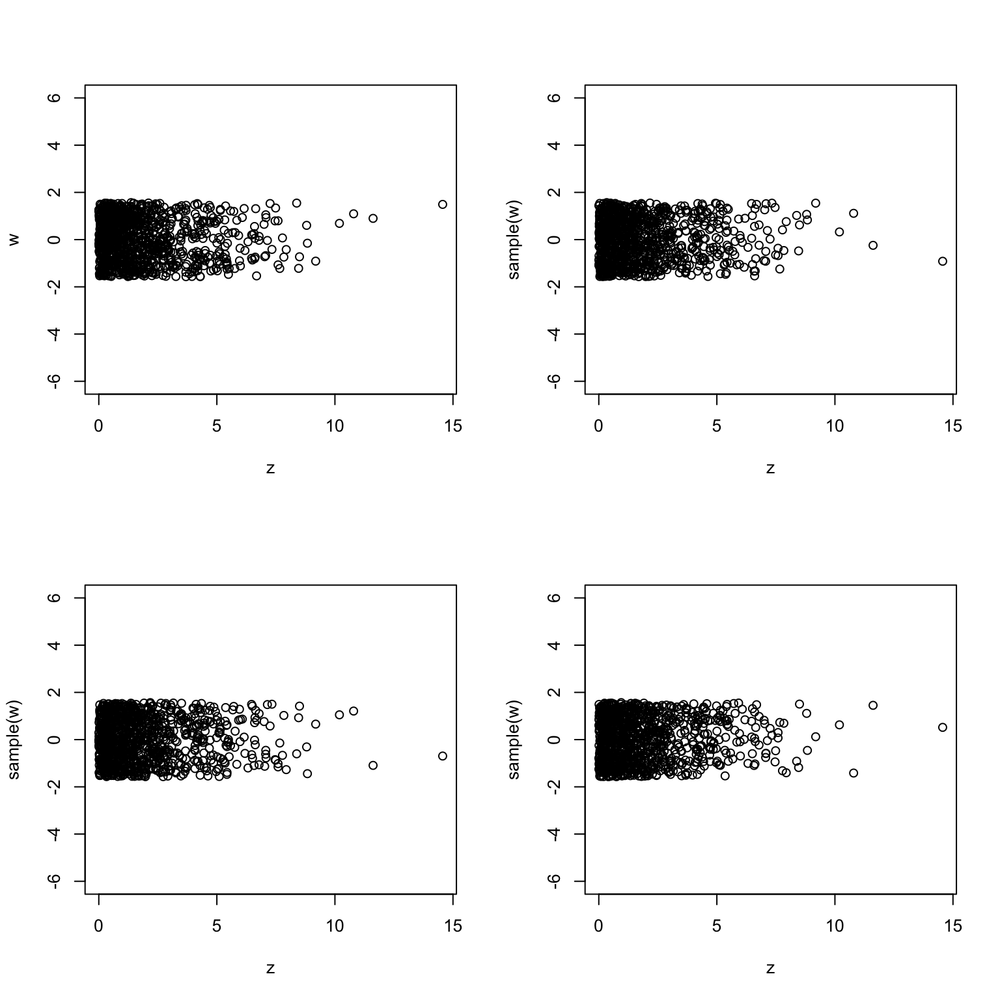
Plots look very similar to each other. Therefore, z and w are probably independent.
These plots in b) and d) reveale that the distribution of the random vector \((X,Y)\) consisting of two independent standard normals is probably rotation invariant. In b) we are asked to compare the coordinates of the vector obtained from \((X,Y)\) by a rotation at \(45\) degrees around the origin. The fact that independence persisted suggests that components remain independent even after a (specific) rotation. If you tried rotations by different angles you would get the same result. The experiment in d) told us that the (squared) distance \(X^2+Y^2\) and angle between \((X,Y)\) and the \(x\)-are independent. This is also something that one would expect from a rotationally-invariant distribution. Indeed, the distribution of the distance to the origin should not depend on the direction.
It is important to note that none of this proves anything. It is simply numerical evidence for a given conclusion.
Problem 2.6 Simulate \(n=10000\) draws from the joint distribution given by the following table:
| 1 | 2 | 3 | |
|---|---|---|---|
| 1 | 0.1 | 0.0 | 0.3 |
| 2 | 0.1 | 0.1 | 0.0 |
| 3 | 0.0 | 0.0 | 0.4 |
Solution.
We are using the procedure from Section 2.2 in the notes.
nsim = 10000
joint_distribution_long = data.frame(
x = c(1, 1, 1, 2, 2, 2, 3, 3, 3),
y = c(1, 2, 3, 1, 2, 3, 1, 2, 3)
)
probabilities_long =
c(0.1, 0.0, 0.3,
0.1, 0.1, 0.0,
0.0, 0.0, 0.4)
sampled_rows = sample(
x = 1:nrow(joint_distribution_long),
size = nsim,
replace = TRUE,
prob = probabilities_long
)
draws = joint_distribution_long[sampled_rows,]
(freq = table(draws))
## y
## x 1 2 3
## 1 1022 0 3043
## 2 1061 957 0
## 3 0 0 3917
(rel_freq = table(draws) / nsim)
## y
## x 1 2 3
## 1 0.1022 0.0000 0.3043
## 2 0.1061 0.0957 0.0000
## 3 0.0000 0.0000 0.3917
(th_freq = matrix(probabilities_long, byrow = TRUE, nrow = 3))
## [,1] [,2] [,3]
## [1,] 0.1 0.0 0.3
## [2,] 0.1 0.1 0.0
## [3,] 0.0 0.0 0.4
(err = rel_freq - th_freq)
## y
## x 1 2 3
## 1 0.0022 0.0000 0.0043
## 2 0.0061 -0.0043 0.0000
## 3 0.0000 0.0000 -0.0083Problem 2.7 Estimate the following integrals using Monte Carlo
\(\int_0^1 \cos(x)\, dx\)
\(\int_{-\infty}^{\infty}\frac{1}{\sqrt{2\pi}}\frac{e^{-x^2/2}}{1+x^4}\,dx\)
\(\int_0^{\infty} e^{-x^3-x}\, dx\)
\(\int_{-\infty}^{\infty} \frac{\cos(x^2)}{1+x^2}\, dx\) (extra credit)
Solution.
The idea here is to use the “fundamental theorem of statistics” \[ {\mathbb{E}}[ g(X) ] = \int g(x)\, f_X(x)\, dx \] where \(f_X\) is the pdf of \(X\) and \(g\) is any reasonably well-behaved function. Normally, one would use the integral on the right to compute the expectation on the left. We are flipping the logic, and using the expectation (which we can approximate via Monte Carlo) to estimate the integral on the right.
- We pick \(g(x) = \cos(x)\) and \(X\) a r.v. with a uniform distribution on \((0,1)\), so that \(f_X(x) = 1\) for \(x\in (0,1)\) and \(0\) otherwise:
nsim = 10000
x = runif(nsim)
y = cos(x)
mean(y)
## [1] 0.8394265For comparison, the exact value of the integral is \(\sin(1) \approx 0.841471\).
- We cannot use the uniform distribution anymore, because the limits of integration are \(\pm \infty\). Part of the expression inside the integral can be recognized as a (standard) normal density, so we take \(X \sim N(0,1)\) and \(g(x) = 1/(1+x^4)\)
nsim = 10000
x = rnorm(nsim)
y = 1/(1 + x^4)
mean(y)
## [1] 0.680268The “exact” value (i.e., very precise approximation to this integral obtained using another numerical method) is \(0.676763\).
- We integrate \(g(x) = \exp(-x^3)\) against the exponential pdf \(f_X(x) = \exp(-x)\), for \(x>0\):
nsim = 10000
x = rexp(nsim)
y = exp(-x^3)
mean(y)
## [1] 0.5674688A close approximation of the true value is \(0.56889\).
d). In this case, a possible choice of the distribution for \(X\) is the Cauchy distribution (no worries if you never heard about it), whose pdf is \(f_X(x) = \frac{1}{\pi(1+x^2)}\), so that \(g(x) = \pi \cos(x^2)\):
nsim = 10000
x = rcauchy(nsim)
y = pi * cos(x^2)
mean(y)
## [1] 1.337538The “exact” value is \(1.30561\).

Solution.
By the very construction, it is clear that the entire tricylinder lies within the cube \([-1,1]\times [-1,1] \times [-1,1]\). Therefore, we can compute its volume by simulating random draws from the uniform distribution in that cube, and computing the relative frequence of those values that fall inside the tricylinder. The whole point is that it is easy to check, given a point \((x,y,z)\), whether it lies inside the tricylinder or not. Indeed, the answer is “yes” if and only if all three of the following inequalities are satisfied: \[ x^2+y^2 \le 1,\ x^2+z^2\leq 1 \text{ and } y^2+z^2\leq 1.\]
nsim = 10000
x = runif(nsim, min = -1, max = 1)
y = runif(nsim, min = -1, max = 1)
z = runif(nsim, min = -1, max = 1)
is_in = (x^2 + y^2 <= 1) & (x^2 + z^2 <= 1) & (y^2 + z^2 <= 1)
(2^3 * sum(is_in)/nsim)
## [1] 4.6976We multiplied by \(2^3\) because that is the volume of the cube \([-1,1]\times [-1,1] \times [-1,1]\). Without it, we would get the portion of the cube taken by the tricylinder, and not its volume.
The true value of \(8(2-\sqrt{2})\) is, approximately, \(4.6862\).Solution.
The host knows where the car is and what contestant’s guess is. If those two are the same (i.e., contestant guessed right), he will choose one of the two remaining doors at random. If not, he simply shows the contestant the other door with the goat behind it. This exactly what the function show_door implements:
show_door = function(car, guess) {
all_doors = c(1, 2, 3)
goat_doors = all_doors[all_doors != car]
if (car == guess) {
random_goat_door = sample(goat_doors, size = 1)
return(random_goat_door)
} else {
the_other_goat_door = goat_doors[goat_doors != guess]
return(the_other_goat_door)
}
}Next, we write a function which simulates the outcome of a single game. It will have one argument, switch which will determine whether the contestant switches the door or not.
one_game = function(switch) {
all_doors = c(1, 2, 3)
car = sample(all_doors, size = 1)
guess = sample(all_doors, size = 1)
if (switch) {
unguessed_doors = all_doors[all_doors != guess]
shown_door = show_door(car, guess)
switched_guess = unguessed_doors[unguessed_doors != shown_door]
return(switched_guess == car)
} else {
return(guess == car)
}
}Finally we run two batches of \(10,000\) simulations, one with switch=TRUE and another with switch=FALSE:
nsim = 10000
switch_doors = replicate(nsim, one_game(TRUE))
dont_switch_doors = replicate(nsim, one_game(FALSE))
(prob_with_switching = mean(switch_doors))
## [1] 0.6783
(prob_without_switching = mean(dont_switch_doors))
## [1] 0.3364Therefore, the probability of winning after switching is about double the probability of winning without switching. Switching is good for you!